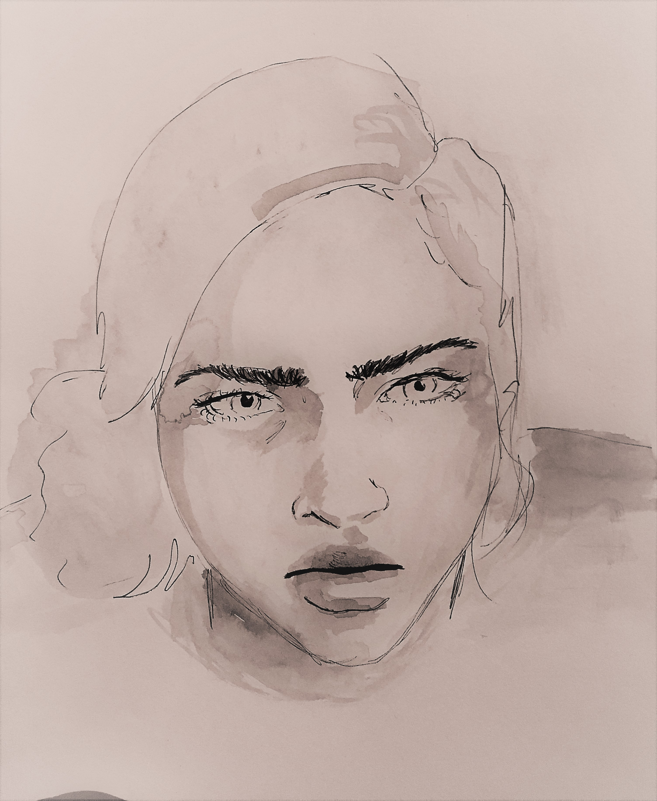

@lil.rosem

For a while, I had a hard time calling myself an artist.
I had myself convinced that art was simply my hobby.
In my fourth year of college, I finally chose to transfer into the Arts and Humanities department.
The digital world of art was refreshing and challenging. It allowed me to experiment past the limitations of the "traditional definition" of art.
When I was younger, I would draw trees big enough to fill up the paper that branched off in swirls and looped around themselves.
Through the years, my focuses have changed, but I always find myself looking at the vibrancy and drama of life.
My romantic lense on the world shows through the vigoress expression of my art.
When I compared myself to others, I hesitated.
Calling it my passion felt like a lie.
Along my journey of life, I have gained independence, confidence and the strength to take a breather and go at my own pace.
When people call me an artist, they tell me I should do something with my talents. Now I tell them, “Yep! I am.”
Copyright © 2020, Lily Mendoza Official Artist Site